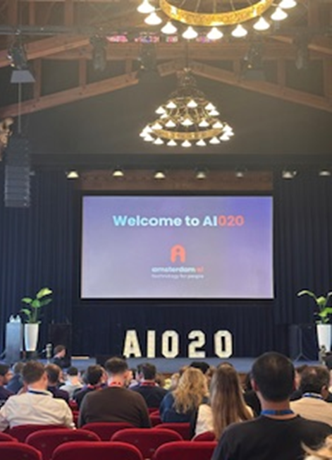
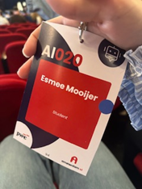
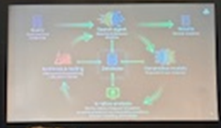

Waarom wilde ik hierheen?
Ik wilde dit evenement bezoeken omdat AI een steeds grotere rol speelt binnen technologie en ook relevant is voor mijn studie en project.
Binnen mijn project The Punishing Home werken wij met het idee waarbij AI gedrag kan herkennen en daarop reageert.
Daarom wilde ik meer inzicht krijgen in hoe AI in de praktijk wordt gebruikt en wat de mogelijkheden zijn van deze technologie.
Aan welke onderwerpen relateert dit?
Dit evenement relateert aan meerdere onderwerpen binnen mijn studie en mijn rol als creative technologist.
- Kunstmatige intelligentie (AI)
- Human Computer Interaction
- User Experience
- Ethische technologie
- Gedragsanalyse
Het evenement sluit goed aan op mijn project The Punishing Home, omdat AI daarin gedrag analyseert en daarop reageert.
Ook relateert het aan de ethische kant van technologie, omdat er werd nagedacht over hoe AI zowel positief als negatief ingezet kan worden binnen de samenleving.
Waarom wilde ik hierheen?
Ik wilde dit evenement bezoeken omdat AI een steeds grotere rol speelt binnen technologie en ook relevant is voor mijn studie en project. Binnen mijn project the punishing home werken we met het idee waarbij AI gedrag kan herkennen en daarop reageert. Daarom wilde ik meer inzicht krijgen in hoe AI in de praktijk wordt gebruikt en wat de mogelijkheden zijn.
Aan welke onderwerpen relateert dit?
Dit evenement relateert aan meerdere onderwerpen binnen mijn studie en in mijn rol als creative technologist.
Het sluit aan bij natuurlijk AI, omdat het evenement volledig gericht was op ontwikkeling van AI.
Het heeft ook een verband met het project waar ik mee bezig ben “the punishing home”.
Ook relateert het aan human computer interaction en user experience, omdat AI invloed heeft op hoe gebruikers omgaan met technologie.
Tot slot sluit het aan bij de ethische kant van technologie, omdat er werd nagedacht over de impact van AI op de samenleving en hoe technologie zowel positief als negatief ingezet kan worden.
Foto's van het evenement



Wat heb je hier geleerd?
Tijdens het evenement heb ik een presentatie bijgewoond van Max Welling over CuspAI. Dit heeft mijn beeld van AI veranderd.
Ik had altijd al mijn bedenkingen met AI, maar nadat ik Max Welling heb horen praten over cusp.ai vond ik het wel heel interessant.
Ik heb bijvoorbeeld geleerd dat je AI kan inzetten op meerdere mogelijkheden.
Max Welling vertelde bijvoorbeeld dat ze daar AI gebruiken om de wereld te verbeteren, doordat de AI monocules kan maken met de data die ze de AI geven.
Ze zijn daar bezig met een materials intelligence machine dit kan bijvoorbeeld monocules maken voor schoon drinkwater en veel meer andere dingen.
Ik had nooit verwacht dat AI dit mogelijk kon maken dus ik heb er niet alleen van geleerd maar ook een andere gedachte gekregen over AI.
Ook heb ik een workshop bijgewoond van PWC wat ook over AI ging met vragen hoe wij om zouden moeten gaan met AI op de werkvloer.
Wat zijn jouw take-aways van dit bezoek?
Wat zijn mijn belangrijke inzichten van dit bezoek:
- Processen zoals onderzoek en experimenten duren normaal lang, maar AI kan deze versnellen.
- AI kan werken in een soort loop waarbij het continue leert van eerdere resultaten.
- Een search agent kan grote hoeveelheden data analyseren en gebruiken om betere beslissingen te maken.
- Data wordt gefilterd om alleen bruikbare resultaten over te houden voor verdere tests.
- AI kan experimenten plannen, uitvoeren en resultaten samenvatten.
- AI kan uiteindelijk helpen bij het automatiseren van laboratoria.
- Het is belangrijk om na te denken over de impact van AI op gebruikers.
Reflectie
Door dit evenement ben ik anders gaan kijken naar AI.
Eerst zag ik vooral de risico’s van AI, maar tijdens het evenement zag ik ook hoe AI gebruikt kan worden om positieve oplossingen te ontwikkelen.
Tegelijkertijd blijft het belangrijk om kritisch te blijven nadenken over de impact van AI op mensen, gedrag en de samenleving.